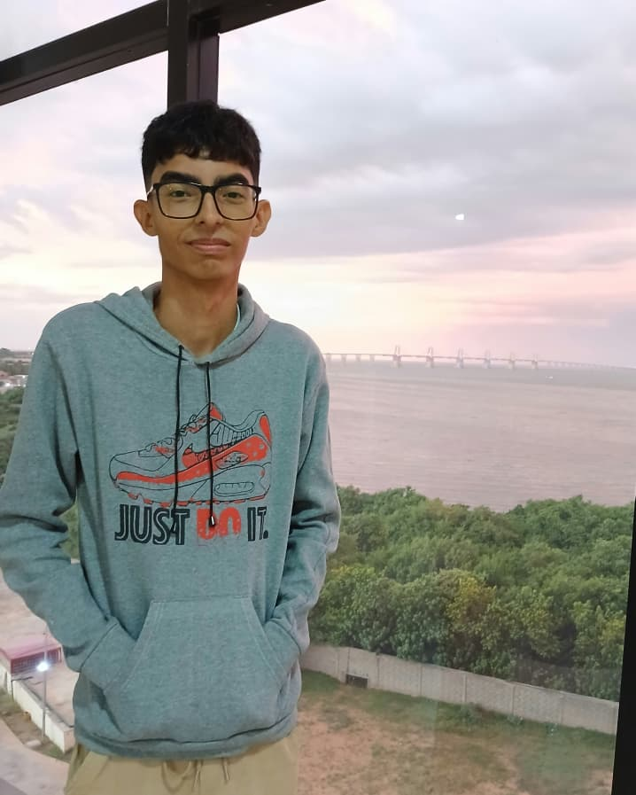

PNF Informática
Eric Andrade
Programador y Arquitectura Web
"Me encargo de dar vida a la arquitectura digital del BioMapa. Mi trabajo consiste en programar la lógica del sitio y el sistema de geolocalización para asegurar que cada usuario pueda consultar la información de forma rápida."